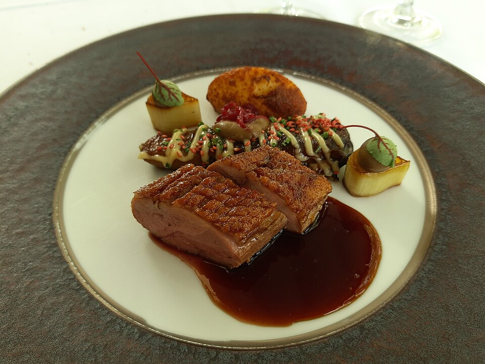

Technique Over Pretense
We channel French classical training, complex smoking, and cryogenic gastronomy into an intimate, warm room where guests can wear blue jeans and feel completely at ease.
When Chef Taylor Kastl and Steve McGinley founded The Teal Turnip in 2021, their vision was radical in its simplicity: extraordinary culinary art should be playful, welcoming, and entirely devoid of stuffiness. Located in Charlotte’s growing Oakhurst community, the restaurant is a labor of love dedicated to farm partnerships, great spirits, and unpretentious joy.

Creativity, ingredient respect, and intentional adult hospitality.
We channel French classical training, complex smoking, and cryogenic gastronomy into an intimate, warm room where guests can wear blue jeans and feel completely at ease.
We build personal relationships with regional farmers and foragers, allowing seasonal harvests to dictate our menus rather than corporate distribution catalogs.
By upholding our adults-only sanctuary policy, we provide a peaceful escape where conversation flows easily over multiple small plates and unhurried cocktails.